#Введение
Предполагается что перед чтением этой статьи вы уже знакомы с тем что такое Клеточный автомат, и знакомы с правилом 110 или правилом 30.
Если нет, то рекомендуется прочитать эти две статьи:
- Простейшие клеточные автоматы и их практическое применение
- 30.000$ за решение задач о Правиле 30 для клеточных автоматов — конкурс от Стивена Вольфрама
Ещё предполагается что вы знакомы с тем что такое обратимый клеточный автомат. Если нет, то рекомендуется прочитать эту статью на Википедии:
Так же я писал про обратимые автоматы в своём телеграм канале начиная отсюда: optozorax_dev/235 на 7 постов.
#Таблица автоматов
В данной статье я хочу аналогично предыдущим рассмотреть одномерные обратимые клеточные автоматы и выяснить их свойства.
Обратимые клеточные автоматы можно получить множеством способов, но я выберу именно тот, которым сконструированы Криттеры, а именно — соседство Марголуса. В одномерном случае оно будет иметь размер 2 бита, поэтому количество возможных состояний будет равно 2² = 4, а количество возможных правил равно 2²! = 24.
Все эти автоматы можно посмотреть в таблице ниже. Здесь всё начинается со случайной строки из нулей и единиц, конец которой замкнут на начало. Затем к ней применяются правила данного автомата, и каждая получающаяся строка прибавляется вниз картинки. То есть на картинках время идёт вниз, а направление вправо или влево. Сверху подписан номер автомата (число от 0 до 23), а снизу подписано правило этого автомата, то есть перестановка чисел [0, 1, 2, 3].

 [0 1 2 3]
[0 1 2 3]
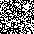
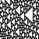
[0 1 3 2]
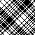
[0 2 1 3]
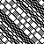
[0 2 3 1]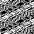
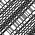
[0 3 1 2]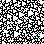
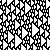
[0 3 2 1]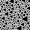
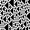
[1 0 2 3]
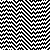
[1 0 3 2]
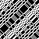
[1 2 0 3]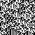
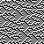
[1 2 3 0]
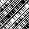
[1 3 0 2]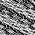
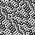
[1 3 2 0]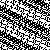
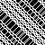
[2 0 1 3]
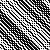
[2 0 3 1]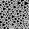
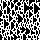
[2 1 0 3]
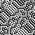
[2 1 3 0]
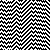
[2 3 0 1]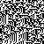
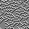
[2 3 1 0]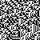
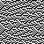
[3 0 1 2]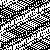
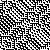
[3 0 2 1]
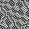
[3 1 0 2]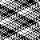
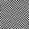
[3 1 2 0]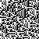
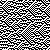
[3 2 0 1]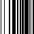
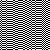
[3 2 1 0]Так как соседство Марголуса требует на чётных шагах применять правила, начиная с чётных ячеек, а на нечётных шагах применять правила для нечётных ячеек, я добавил возможность включать и выключать показ нечётных шагов. Некоторые автоматы ведут себя одинаково для чётных шагов, например 0 ~ 23, 2 ~ 10 ~ 13 ~ 21. Это можно настраивать здесь:
#Различные свойства
Ещё в данной таблице можно показать различные свойства автоматов. Можете выбирать конкретное свойство и пролистать вверх, автоматы обладающие им, подсветятся красным цветом.
Все свойства вычисляются для автоматов через 2 шага, то есть после чётного и нечётного хода. Мне кажется оценивать свойства автомата после 1 шага, не зная какой был до этого: чётный или нечётный не очень полезно, потому что вариантов становится слишком много, и свойств практически не остаётся. Некоторые свойства я объясню далее:
Самые скучные автоматы - сохраняющие текущее состояние. Это автоматы 0 и 23. Они не делают ничего.
Чуть менее скучные автоматы — сохраняющие через два состояния. Относительно данного шага, их шаг в прошлое и шаг в будущее должны быть одинаковы. В итоге это выливается в то, что они приходят к изначальному состоянию максимум через 4 шага. Тут добавляется ещё два автомата: 7 и 16.
Ещё чуть менее-скучные автоматы — при зеркалировании приводящие сами в себя. То есть они не способны различать где лево, а где право. Тут к тривиальным 0 и 23 добавляются 2 и 21.
Одинаковые законы для симуляции назад и вперёд во времени — мне кажется это свойство аналогично T-симметрии, хотя я не знаю насколько справедливо проводить такие аналогии. К ним относится треугольный 1 и порождаемые им (далее мы увидим это).
Правило для симуляции назад во времени равно текущему с инвертированными цветами — то же самое, что и предыдущее, только инвертированное. Это свойство интересно, ведь Криттеры именно такими и являются. То есть если в криттерах инвертировать всё поле, то там будут возникать глайдеры, состоящие не из заполненных клеток, а из пустых клеток, и эти глайдеры будут двигаться назад во времени, а не вперёд.
Инвертирование цвета правил приводит к самому себе — тут интересны автоматы 10 и 13, потому что другими особыми свойствами они не обладают.
Давайте соберём список нетривиальных автоматов, которые обладают своим уникальным свойством:
{1, 5, 6, 14}не различают направление времени.{9, 17, 18, 22}двигаются назад во времени для инвертированных цветов.{2, 21}не различают лево и право.{10, 13}не различают белый и чёрный.
#Красивые автоматы
1похож на правило30для обычных автоматов, тоже формирует треугольники, только повёрнутые на 90°.2похож на узор для рубашки.21похож на правило Tron.
#Порождение правил
Если вернуться в начало и посмотреть на все автоматы, то можно заметить, что для автомата 1, 5 является его зеркальным отражением, 6 его инверсией, а 14 одновременно инверсией и зеркальным отражением.
Поэтому можно задаться вопросом: а какие автоматы можно вывести из каких при помощи различных операций над правилами?
#2Тривиальные порождения
Возьмём преобразования правил, для которых мы можем точно сказать: да, это одно и то же правило, только немного-по другому.
- Поменять местами лево и право. Будет обозначаться Зелёным цветом.
- Инвертировать белый на чёрный. Будет обозначаться Красным цветом.
- Инвертировать правила на симуляцию назад во времени. Будет обозначаться Чёрным цветом.
Тогда все правила будут иметь такие связи:
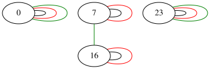
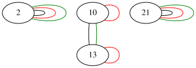
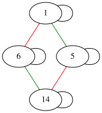
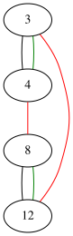
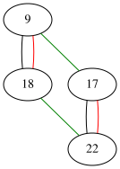
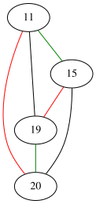
Тут что-то не так. Почему-то 0 и 23 никак не связаны, как не связаны 2 и 21, а ведь они одинаковы если пропустить нечётные шаги:
Зато автоматы 1, 5, 6, 14 связаны между собой, и это радует:
Значит нам нужно придумать ещё какое-то правило для порождения нового правила, чтобы другие можно было связать.
#2Полуинверсия
Давайте добавим правило, которое реализуется полу-инверсией. Если правило можно представить в следующем виде: [00, 01, 10, 11] → [11, 01, 0, 10], то обычная инверсия инвертирует биты с двух сторон, а полу-инверсия только с правой стороны. Будем обозначать её Фиолетовым цветом. Тогда наши графы будут выглядеть следующим образом:
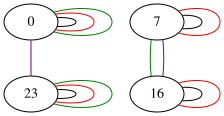
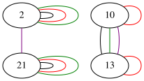
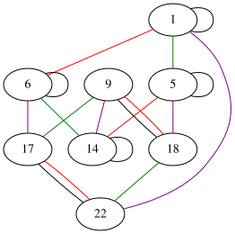
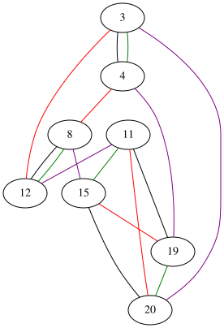
Тут интересная особенность. Кластер правил, порождённых от 1, связался с кластером правил, порождённых от 22. Ну и они довольно похожи:
А кластер правил, порождённых от 3, связался с кластером от 20. Они выглядят похожим образом при пропуске нечётных шагов:
Если посмотреть на то как новая операция связывает правила, то можно сказать что она просто делает 23-x. То есть с этой операцией мы можем получить любое правило с 12 включительно, если нам известны все правила до 11. Это хорошо, потому что можно выкинуть половину правил и знать что она будет симметрична первой половине относительно полу-инверсии.
Но у нас всё ещё не связаны правила 2 и 10, которые просто идентичны без нечётных шагов:
#2Странная операция
Я не смог найти комбинацию из обращения времени, отзеркаливания, инверсии, их половинок и всех их комбинаций, чтобы связать 2 и 10 правило. Единственное что я нашёл, это операцию: поменять местами 0 и 1 элемент, и поменять местами 2 и 3 элемент в массиве правила (обозначается квадратными скобками в таблице). Назовём это странной операцией, и будем обозначать Циановым цветом
Тогда у нас получается следующий набор графов:
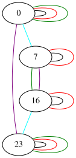
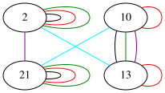
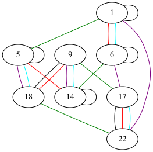
Ура! Теперь у нас связаны тривиальные автоматы {0, 7, 16, 23} и чуть более сложные, но тоже очень простые {2, 10, 13, 21}. А что касается остальных автоматов, с ними не произошло ничего особенного. Что уже было связано прежними операциями, так и осталось связано ими.
Итого у нас получается 4 группы автоматов, которые можно получить довольно простыми операциями, которые не очень сильно меняют поведение автомата. Можно сказать что если мы изучим свойства автомата 1, то по идее можем эктраполировать его свойства с учётом полу-инверсии на 22 автомат.
Правда мне эта странная операция не нравится совсем. Ведь я не понимаю что будет если её обобщить на:
- Автоматы с большим размером блока (от 3 и больше)
- Автоматы с большим числом цветов (от 3 и больше)
- Автоматы с большей размерностью (от 2 и больше)
Поэтому если у вас есть идеи что с этим можно сделать — пишите.
#2D время
Следующее исследование свойств вдохновлено статьёй о том как создать 2D время для необратимых клеточных автоматов:
Там автор предлагает идею 2D времени, которая требует иметь две функции \(f, g\), которые дают одинаковый результат независимо от порядка их применения \(f(g(x)) = g(f(x))\). Поэтому можно проверить все автоматы и узнать кто с кем коммутирует. Прежде всего надо сказать что автоматы {0, 23, 7, 16} коммутируют со всеми, а они совсем тривиальны и не интересны, поэтому я исключил их из графа. И у меня получился следующим результат:
Тут задействованы правила только из групп, порождённых 2 и 3, но нет автоматов, порождённых от треугольной 1, что довольно печально.
Получается примерно тот же результат, как и в той статье, что между собой коммутируют только довольно скучные автоматы, не считая тривиальных.
То что можно рисовать графы между правилами было вдохновлено этой статьёй:
Для вычисления того коммутируют два правила или нет, я просто беру очень длинную строку на 10к бит, и проверяю формулу f(g(x)) = g(f(x)) на ней одной. Так что мои результаты не идеальны, но вероятность ошибки крайне мала.
#Исходники
Исходники для вычисления картинок, свойств и графов для этой статьи находятся в репозитории: optozorax/time_2d_inversible_automata.
#Дальнейшая работа
Мне кажется должны найтись очень интересные правила для:
- Обратимых одномерных автоматов с 3 цветами и размером блока 2
- Обратимых одномерных автоматов с 2 цветами и размером блока 3
В первом случае получается 3²! = 362_880, а во втором 2³! = 40_320 автоматов, что тоже очень много...
Тут придётся уже писать софт, чтобы в графах искать компоненты связности. И больше раскидывать мозгами. Но думаю что количество групп, из которых можно вывести всё остальное, должно быть не таким большим. А далее уже можно исследовать группы на коммутативность. Может среди этих вариантов найдутся интересные правила, для которых можно образовать двумерное время.